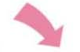
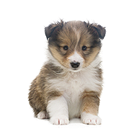
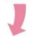

你的助養, 可以幫助浪孩
救援醫療
第一線救援誘捕浪犬貓難度極高，在同地點待命幾週或半夜誘捕是常見之事。遇到重症車禍等還要與時間賽跑搶救。TNVR、意外傷患、慢性病症餵藥，協會一定給予浪孩最好的醫療照顧。
官網有許多重症醫治到痊癒的幸福案例！
居住環境
幸福狗承租一個廢棄養豬場打造成收留園區，一有資金就會做以浪孩為優先的建設改良！如幼犬房、隔離房、遮陽延伸、水泥地整治等。
園區原則：
1.不關籠、不綁繩，自由活動
2.可自由到屋簷避風雨與陽光下玩耍
3.不甕擠，每隻自均有3坪空間
1.不關籠、不綁繩，自由活動
2.可自由到屋簷避風雨與陽光下玩耍
3.不甕擠，每隻自均有3坪空間
飲食照護
飼料：餵食健康乾糧飼料，每月需約1800公斤。
水：園區偏僻沒有自來水，協會十年來每天載20公升給浪孩飲用。
水：園區偏僻沒有自來水，協會十年來每天載20公升給浪孩飲用。
小細節也會細心把關，只為保障浪浪健康
保健預防
每月給與寄生蟲、心絲蟲預防藥，可避免犬隻最常見的幾種傳染病種與死因。大大保證基本健康。
所以園區浪浪的皮膚毛色才都這麼健康！
成為助養主人後, 你可以
➊成為愛媽愛爸
成為幸福狗協會的愛媽愛爸一員，每助養一隻浪浪便會收到我們的可抵稅捐款收據。
成為幸福狗協會的愛媽愛爸一員，每助養一隻浪浪便會收到我們的可抵稅捐款收據。

❷愛相伴
❷愛相伴

您可以抽空到我們園區陪伴牠、餵零食、散步; 幫牠洗澡。不僅讓牠獲得關愛，也能加速社會化的適應能力，增加走入家庭的機會。當然，也歡迎有朝一日帶牠走進你的家庭。讓牠成為你生命裡重要的一席之位。

3集結力量大
協會對浪孩的照護非常完善，但目前資源僅靠創辦人陳愛媽一家籌措。資源增加、收容數量才有機會增加。有您的參與，就能多一隻浪浪離幸福的路更近，看見牠們獲得幸福，值得您感到驕傲！
團隊名稱： 跨平台網頁03組
隊員介紹： 11何韋賢_19謝志廷_21何松霖
隊員介紹： 11何韋賢_19謝志廷_21何松霖
版權所有©2020-2025 流浪貓狗助養及募資平台 保留所有權